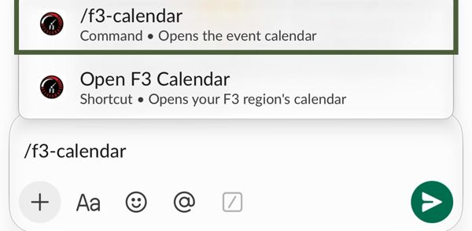
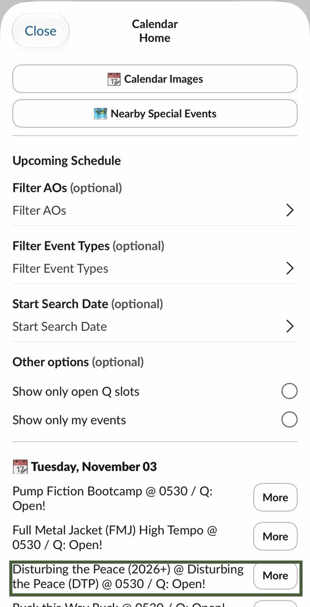
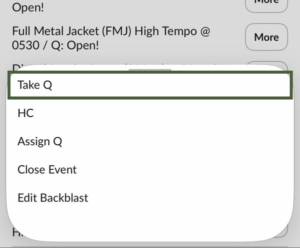
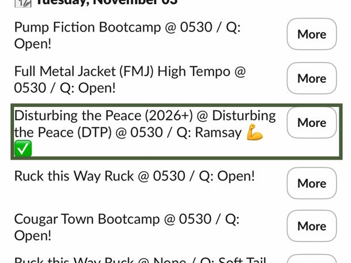
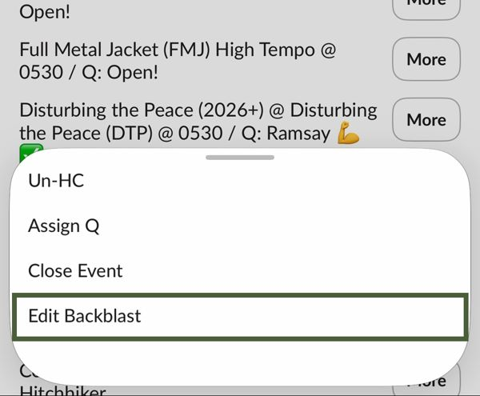
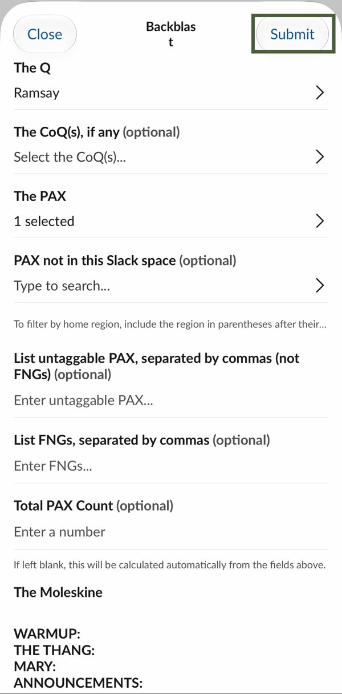

How-To · For the PAXSlack · Phone or desktop
How to Q
Claim your Q before the workout, post the backblast after. Both happen in Slack with one command.
Before
/f3-calendar → More → Take Q
After
/f3-calendar → More → Edit Backblast
Part 1 · Before the workout
Take the Q
Any time, even days out-
01
Type /f3-calendar
In any Slack message box. Tap the /f3-calendar suggestion that pops up, then hit send.

-
02
Find your workout, tap More
Workouts are listed by day. Open slots say Q: Open!
TipLong list? Turn on Show only open Q slots.
-
03
Tap Take Q
First option in the menu.

-
04
Look for your name + ✅
Your F3 name now shows as the Q on that workout. You're on the board.

Part 2 · After the workout
Post the Backblast
Same command, different button-
05
More → Edit Backblast
Run /f3-calendar again, find the workout you led, tap More, then Edit Backblast.
TipTurn on Show only my events to find it fast.
-
06
Fill it in, tap Submit
- The Q · already filled in with you
- The PAX · tag everyone who posted
- FNGs · type any new guys' names
- Moleskine · Warmup, The Thang, Mary, Announcements
TipLeave Total PAX Count blank. It counts for you.
Q'd it. Backblasted it. Done.